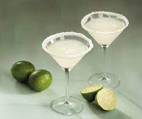

A Margarita é um cocktail mexicano icónico que celebra a tequila com a acidez perfeita da lima e a doçura do licor de laranja.
Método de Preparo
GuarniçãoMeio aro de sal (opcional). |
 |
Francisco "Pancho" Morales diz que criou a Margarita no verão de 1942 enquanto trabalhava num bar chamado Tommy's Place na Avenida Juarez em Ciudad Juarez, México, depois de "Uma senhora entrou e disse: 'Deixa-me ter uma Magnolia'" no dia 4 de julho de 1942.